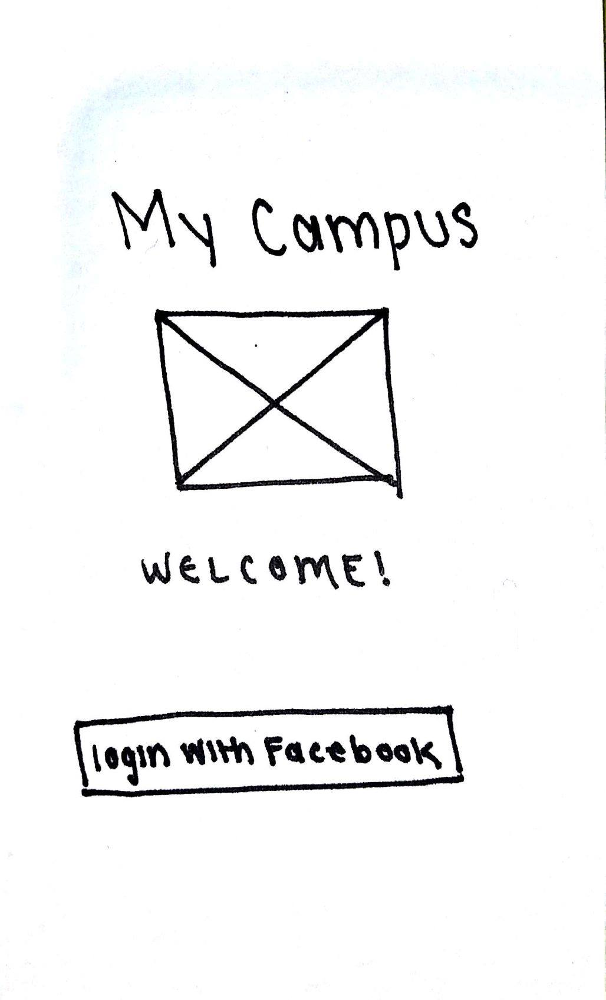
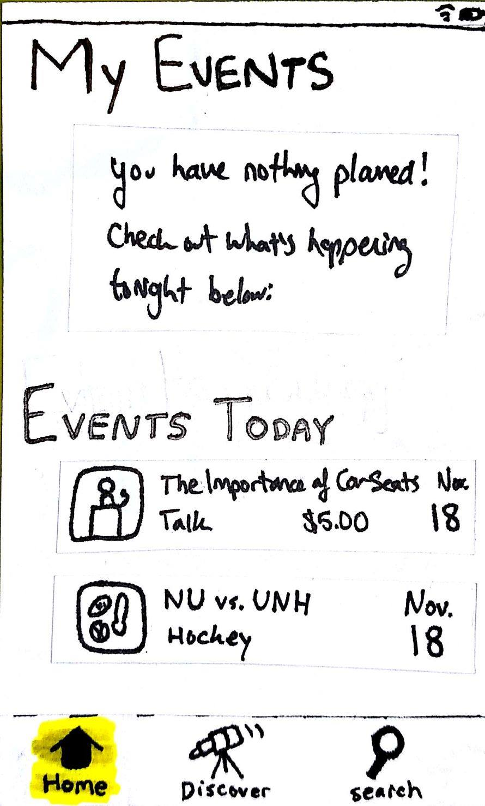
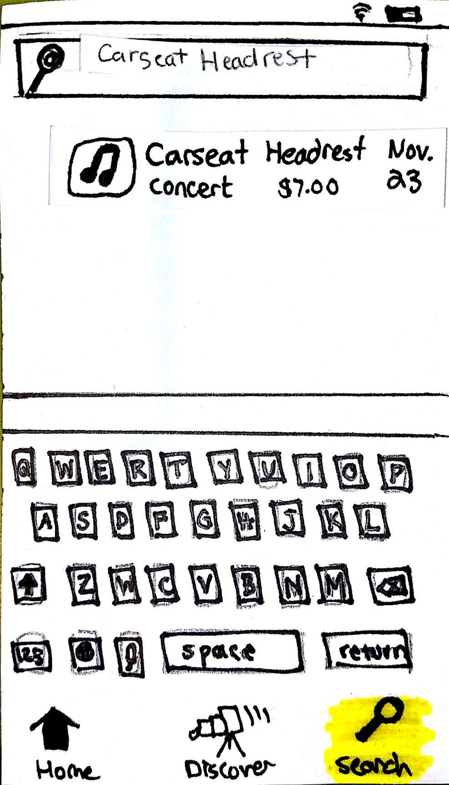
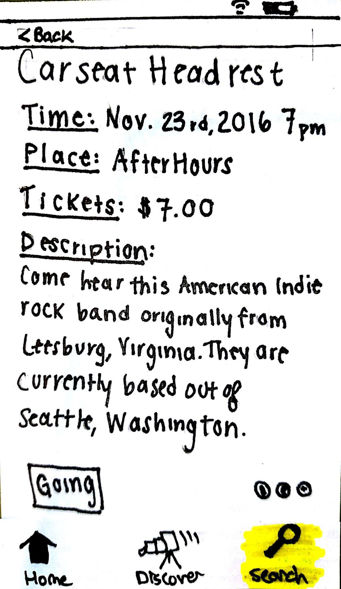
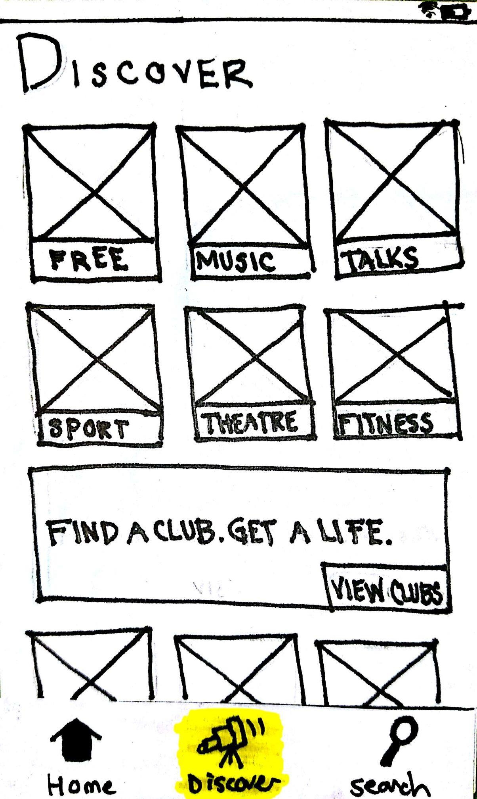
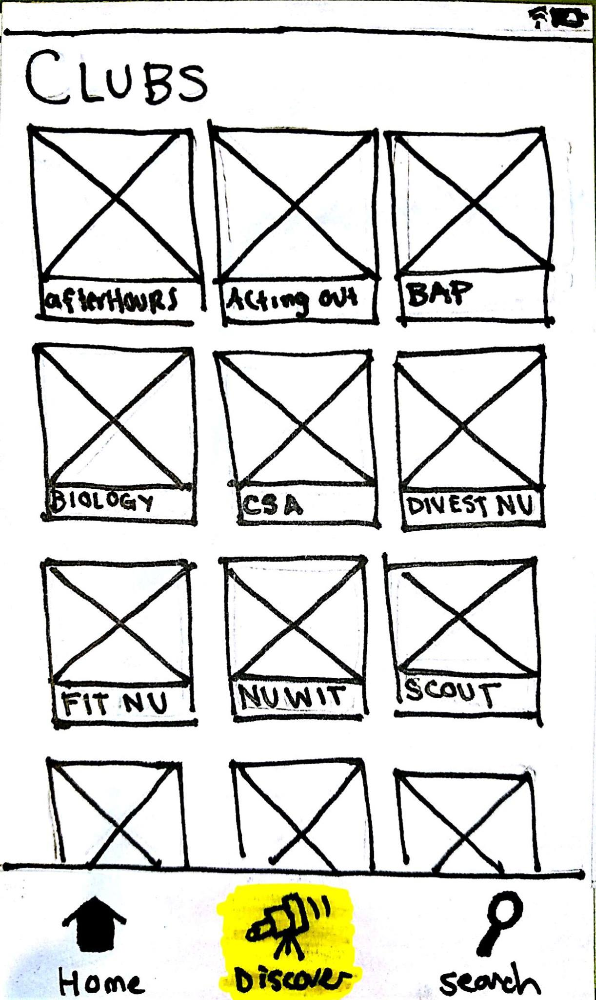
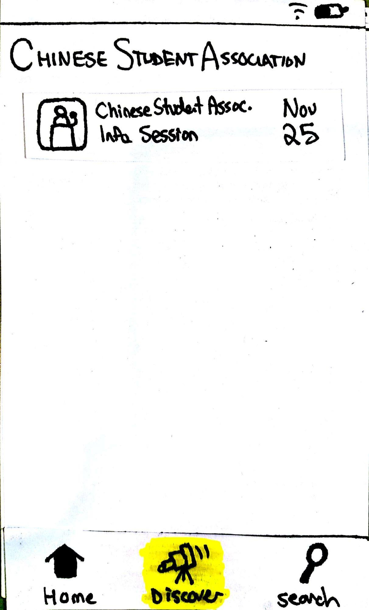
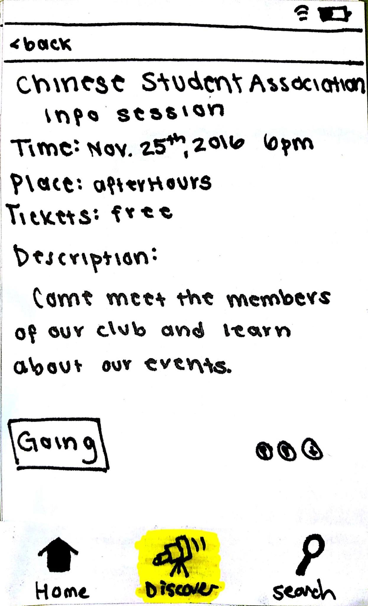
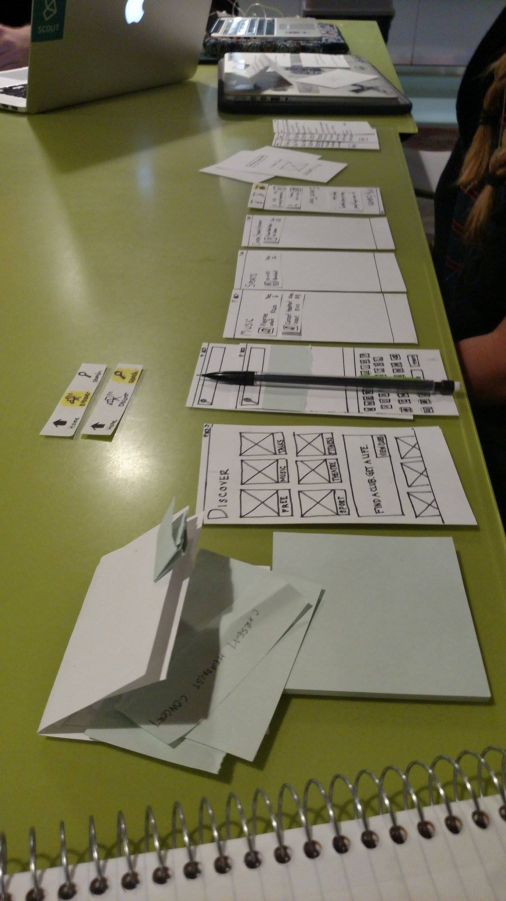

|  |  |  |
|  |  |  |
|  |  |
Hi, we’re designing an app for Northeastern students to find events around campus. Connecting to your Facebook account, this app makes it easy for you to find events you can attend.
Informed consent: We are conducting a study to find out what people think about this. We will not record or publish any information with your name. This is for a course we’re taking in Human-Computer Interaction from Prof. Bickmore in the College of Computer and Information Science. Your participation is voluntary and you can stop anytime and ask that your data not be used in our study. Would you help us with this, it should take about 5 minutes?
Great. We really appreciate your help with this. As I mentioned before, we are working on an app for Northeastern students to easily find events around campus. Our product involves a mobile application as the interface. The purpose of our study today is for you to help us discover any errors or difficulties with our interface. We want to make it user-friendly before we develop it, which is why we are not going to use a computer, but paper versions of the screens.
We’ll give you three different tasks that we feel represent different interactions with our application such as finding a specific event or finding an event through a club. Your job today is to tell us what is easy to understand, what’s confusing, and whether something was unexpected.
The other members of the team, Bahar and Noah, will just be watching and taking notes.
We’re not testing you, we’re testing the interface, so if you run into any problems, it’s not your fault and it means there is something we need to change in our interface.
The prototype is in its early stages, so we’re still thinking through how it should work, and we really appreciate any feedback.
Melina will be playing the role of the computer and will be updating the paper pages as you interact with them. She may seem like a smart computer, but she has no speech recognition or artificial intelligence. She is not allowed to explain anything to you, so interact with the prototype the same way you would with a smart phone. Use your finger to click on buttons, or write on the post-it.
Again, please tell us what makes sense to you or ask us any questions you have. We may not answer them right away, but we will note them to change our interface.
Remember that we’re testing the interface—we’re not testing you. Do you have any questions before we begin? Are you ready to start?
Okay, here’s the first thing we’d like you to do. Take a minute to read this and let me know if it makes sense. If so, then whenever you’re ready please show us what you would do first.
|  |
Place: Curry Student Center, 2nd floor Equipment: Paper prototype, post-its, pencil |
The first point of confusion that we noticed was in the discover versus the search tab of our app. We anticipated the discover tab being used to browse through the various events and clubs, while the search tab would provide details for a specific event. The second user that tested the app used the search tab to find a new club to join; this was unanticipated because the “discover” tab was implemented for this purpose, and the user did not take advantage of its functionality. Upon asking this user why they used “search” as opposed to “discover”, they answered that they were going to type in “clubs” in the search bar to get a list of all of the clubs. As a result of this, it became apparent that the users did not interpret the functionality of “search” and “discover” the same way as anticipated. Furthermore, the third user had issues with the distinction between the tabs as well. Upon asking the user to find details for the Carseat Headrest concert, there was hesitation before they eventually chose the “search” tab. When we asked this user what they did this and what they thought the “discover” tab did, they responded that they thought the discover tab would display events similar to ones they had searched before. This was another example of the user having a different interpretation than anticipated of what the “discover” tab does. Awareness of the disparity in understanding of the function of the “search” and “discover” tabs between the developers and users was incredibly useful because it became clear that there needs to be a more clear distinction between these two tabs. A possible solution for this problem would be to rebrand the “discover” tab in order to make it clear that it is a place that lists different events and clubs. Perhaps “browse” or “list” with a different icon would be more appropriate. Furthermore, we are now aware that users might want to be able to use the search feature for more general purposes than anticipated--for example to list all clubs, or all events on a certain day for example. Adding to the confusion of the search tab, one user was not clear as to whether or not the search function was approximate or exact.
Another problem the first user made apparent to us is that the way we had organized the “discover” tab was confusing. The first half of it listed out all different types of non-club events, whereas the second half gave a button to browse all clubs. This organization was not clear to the users because once asked to find the details for the information session of the Chinese Student Association, the first user went to the “discover” tab, and then proceeded to press “talks”. The information session of the CSA is not quite a talk; therefore, the user was lost. The reason for them being lost was because the distinction between “talks” and “find a club” was not clear in the discover tab because there is overlap in the categories and it is not always clear when a particular event would go under each. One possible solution would be to relocate the “find a club” tab such that users see it first when they arrive at the page. Another would be to get rid of the “find a club” category and create general categories that club events would fall under. One user even suggested that the discover tab should show more events in the future, organizing chronologically as opposed to by category.
Some other shortcomings of the design users made clear to us were that there is no undo button if someone presses “going”, and having an “interested” tab if the event seems interesting but the user does not know their availability. The home page does not state what the date is. Additionally, a couple were confused about the process to log into Facebook. Does the app redirect to Facebook? What if they are already logged into Facebook on their phone, do they still need to log into Facebook on the app? Additionally, if Facebook adds something to their phone calendar, would the app do so as well? A solution for this would be to only have Facebook add the event to the calendar. Because the app is linked to Facebook, a social tab is not necessary in our design. They also wanted the description of the club when they were browsing the clubs, which we did not provide because we just had the event descriptions. A possible solution would be to have a blurb of the club under discover.
The homepage on the app caused minor confusion because there is a “my events” and the “events today” places an event today under my events in both categories. However, the users quickly got used to it once they observed that an event would show up under both. Another observation was that chronological organization of my events on the homepage was important to the users and they did not mind pressing “more” to look at events in the future.
We concluded that we needed to change our discover page to either be a different name, or we need to add another tab for clubs itself. Not too many people understood where the clubs were, or that there was a dedicated page for clubs. It also wasn’t clear what the function of the discover page was. However besides that, most people found it was a very usable product, as most of them rated the product a “2” on a scale of 1-7, 1 being easy and 7 difficult. We also concluded that we want as complete integration of facebook as possible. Ideally we would have a going and interested button, and also have events that they are going to be automatically added to their calendars.